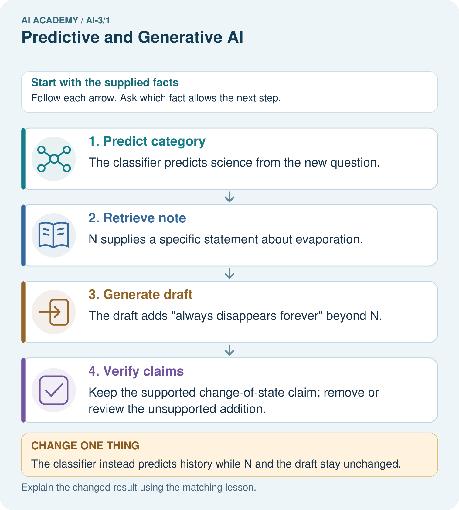

AI Academy · Level 3 · Grade 8 · Week 1 · Teacher guide
Predictive and Generative AI
Learn to understand, design, build, test and explain AI systems responsibly.
Project: Verified Study Buddy
Teacher guide · 1 of 8
Predictive and Generative AI
Teach the learning cycle
Primary target: Distinguish discriminative prediction from generation by inspecting the requested output
| Session | Sequence and minutes | Resources |
|---|---|---|
| Session 1 · Understand · 45 min | 0–7: recall and prerequisite; 7–15: inspect the concrete case and predict; 15–30: teacher models the worked trace; 30–40: learners explain a step using the text and visual; 40–45: check the core idea. | Sections 1–6; record the brief recall in the workbook. |
| Session 2 · Practise · 45 min | 0–5: retrieve the procedure; 5–15: W2 completion practice; 15–23: explain and check with a partner; 23–30: each learner answers the misconception check; 30–40: targeted reteaching or a harder variation; 40–45: prepare the investigation. | Sections 7–10; use the matching workbook W2 and misconception check. |
| Session 3 · Investigate and transfer · 45 min | 0–5: retrieve the decision rule; 5–20: investigate or trace; 20–30: start the independent case; 30–38: connect the project; 38–43: act on feedback; 43–45: plan the return check. | Sections 9 and 11–14. Give extra time to finish the full task set; use Section 15 when the week includes a coding lab. |
This is a starting allocation of 135 minutes, not a validated duration. Preserve all named topics. Schedule extra time for connected examples, the full investigation, independent cases and project building. Repeated copies of a case share one recorded attempt; they are not new evidence.
Case exposure check: this source example appears in ai-2/27, ai-3/1. Reuse a familiar case for recall or modelling; verify that the case used to assess transfer has not already received feedback.
Retrieval answer guidance
Capstone Expo
Without opening the old lesson, explain one key idea from Capstone Expo. Give an example and a mistake that the idea helps you avoid.
Look for: Defend an application using reproducible evidence
Reference example, not the only acceptable wording: Fictional raw dataset, schema, code version, settings, run instructions, tests with expected/actual results, rejection reasons and change log.
Use the student module and workbook section with this exact week title. The worked case, independent question and answers below form one aligned lesson sequence.
What the learner must demonstrate
A study tool finds a paragraph, labels its difficulty and invents practice questions. Identify the three operations and one check for each.
Concept to explain
Week 1: Predictive and Generative AI
| Term | Meaning |
|---|---|
| predictive AI | AI used to estimate a target such as a category, number or future outcome from inputs. |
| generative AI | AI that produces new content such as text, images or audio rather than only selecting a category. |
| target | The category, value or outcome a prediction task is intended to estimate. |
| output space | The set or range of outputs a system can produce for a task. |
Prepare the class
Use the supplied scenario, student illustrations and blank paper. For numeric work, offer counters or a calculator after learners show the setup. Fictional records are supplied; personal data and paid accounts are unnecessary.
Allow 80 minutes: recall 8; explanation 12; worked demonstration 15; guided practice 20; independent assessment 15; project and reflection 10. Extend the lab into a second session when needed.
Preparation for the connected explanation
Use two 45-minute sessions. All model outputs and probability tables are constructed classroom examples. No hosted AI service, external API or student account is needed. Distinguish a model objective from factual support and system permissions. Collect independent work before discussing its solutions.
Readiness answer
A prediction is a model output. Truth requires appropriate independent observations or sources; confidence and low training loss do not supply that evidence.
Printed lesson and workbook; paper and pencil
Calculator; optional local Python 3 interpreter
Prepare the independent task and fresh retry without displaying solutions
End goal for the pictorial case
By the end, I can identify generation and prediction objectives without confusing either with verified truth.
This added worked case illustrates the week’s main idea. Retain all original and connected topics; schedule its practice within the teaching cycle.
Teacher guide · 2 of 8
Explain the mechanism
Explain the mechanism
Input → Process → Output
Trace the information. At each stage, ask what changed and how you could test it.
Which stage could fail even when the other two are correct? Explain:
Predict first. Then check each step. A correct answer without visible reasoning is incomplete evidence.
1. Classifier: choose one label from cat, dog, or rabbit.
2. Regressor: estimate a numerical reading time.
3. Generator: construct a new explanation token by token.
4. A product may combine mechanisms, so test each stage separately.
Recalculate, retrace, or restate the reasoning in your own representation:
CHECK Did the evidence answer the exact question? Did the total, path, or source record stay consistent?
Concrete teaching case
A tool labels a question biology, writes a new question and computes 7 times 8.
Identify each operation.
Exact explanation to model
Labelling selects a category; generation creates text; calculation returns 56. Generated questions need factual and instructional checks.
Explain the added worked example
A classifier might map a message to the label request or report. A text generator instead produces a sequence, predicting a distribution over the next token given a prefix. Both make predictions, but the training targets and permitted outputs differ. One application can combine generation with a classifier, retrieval and human approval. Calling a whole product “generative” does not describe every component.
The objective defines what training attempts to fit. Next-token fit rewards matching observed continuations; it does not directly certify that an answer is true, well sourced or permitted. A fluent completion is still an output to evaluate against the task.
There are ten observed continuations. The empirical probabilities are red 6/10 = 0.6, blue 3/10 = 0.3, green 1/10 = 0.1. They are nonnegative and sum to 1. A simple frequentist classroom model uses these relative counts as its next-token distribution. These probabilities describe the supplied corpus counts, not the current colour of any actual marker.
Key terms
| Term | Meaning |
|---|---|
| Generative objective | A training aim concerned with producing or modelling possible outputs |
| Discriminative objective | A training aim mapping inputs to a specified target such as a label |
| Conditional distribution | Probabilities for alternatives given stated information |
| Autoregressive generation | Producing a sequence one next item at a time using preceding items |
Model the reasoning aloud
Use the complete worked example below before asking learners to complete W2. Reveal a small part, invite a prediction, then explain the deciding step. These teacher notes contain solutions; do not reveal the independent case answer during modelling.
After producing red, the next step conditions on the expanded prefix “The marker is red”. A second table might give an end token probability 0.8 and the token today probability 0.2. A generated sequence can stop at the end token or continue. Do not reuse the first-step table unchanged after adding a token unless the model explicitly ignores the new prefix.
A separate classifier can return red as a label from an image; that is a different input and target from continuing text. A downstream evaluation asks whether the system correctly reports the current marker. It must include ground truth or sources and appropriate failure handling, not just count plausible phrases.
| Thinking move | Teacher prompt |
|---|---|
| Plan | What is given? What is the question? Which procedure fits these facts? |
| Do | Point to each input and intermediate step in the worked trace. Name the rule that allows the next step. |
| Check | Does the output answer the question? Which assumption or limitation prevents a larger claim? |
Use the diagram and verbal explanation together. Ask learners to match a sentence to a specific visual step; do not assign learners fixed visual or auditory learning styles.
A pictorial worked case: Predictive and Generative AI
A fictional learning tool first classifies a question, then drafts an answer from a supplied note.
The facts we will use
A fitted classifier labels a question science; its training used labelled questions.
Approved note N: evaporation changes liquid water into water vapour. A generator drafts: “Water evaporates into vapour and always disappears forever.”

Read the picture one step at a time
Why this result follows
Classification predicts a category under a trained mapping. Generation produces a sequence of words under a language objective. Supplying a note can support factual grounding, but the draft still requires claim-level checking. The category being correct does not prove every sentence in the answer is correct.
What this example does not establish
This example does not expose a real model’s architecture or prove that source-fed generation always stays grounded.
Change one thing in the pictured case
Change: The classifier instead predicts history while N and the draft stay unchanged.
Prediction: The category prediction changes, but the same unsupported draft claim still needs checking.
Reason: Stages can fail independently; one result does not validate another.
Ask while showing the picture
Cover the result. Ask learners to name the inputs and predict the next step. Uncover one step, connect the icon to the actual procedure, and explain its evidence. Then change the supplied condition and compare. The picture is a representation; it does not document execution of a real AI model.
Teacher guide · 3 of 8
Demonstrate and guide practice
Demonstrate and guide practice
Board sequence
Write the given facts: A tool labels a question biology, writes a new question and computes 7 times 8.
Write the question to explain: Identify each operation.
Reveal after predictions: Labelling selects a category; generation creates text; calculation returns 56. Generated questions need factual and instructional checks.
Keep for an independent attempt: A system labels a message as spam. Another writes a new reply. Which task predicts a category and which generates content? Can the new reply contain a false fact?
Classroom dialogue
Ask: Which facts are given, and which would we have to assume? Learners mark relevant details before discussing answers.
Say: Predict first. Show the rule, information path or calculation that would produce the result. A correct guess is not yet an explanation.
Reveal reasoning one step at a time. Explain why a tempting alternative fails. Write units and denominators for arithmetic, trace conditions for decisions, and identify supporting sources for claims.
In pairs, one learner solves while the other checks evidence; exchange roles. Remove the worked answer before independent assessment.
Model these guided questions
Guided: open 0.8 and closed 0.2. The corpus prefers open, but the sensor supplies current closed evidence. Exit: a conditional continuation probability is not verification of a current fact.
Case-specific teaching sequence
| Stage | Teacher action |
|---|---|
| Session 1 start to 7 minutes | Retrieve the prerequisite and distinguish a numerical claim from its interpretation. |
| 7 to 18 minutes | Read section 1 and complete W1; ask for a reason alongside each answer. |
| 18 to 32 minutes | Trace the worked case in section 2 and complete W2. |
| 32 to 45 minutes | Discuss the diagram and complete W3 in pairs; record support. |
| Session 2 start to 8 minutes | Complete the guided response before sharing the answer. |
| 8 to 20 minutes | Read the remaining sections and trace another constructed case. |
| 20 to 35 minutes | Collect W4 independently, requiring calculations and a bounded conclusion. |
| 35 to 45 minutes | Discuss W5 and the exit response. Provide feedback and a fresh retry. |
Reduce help deliberately
Completion task: For The marker is, calculate the three empirical probabilities, their sum and their meaning.
Teacher check: Teacher explanation: Probabilities 0.6,0.3,0.1 sum to 1 and describe ten supplied corpus continuations; they are not observations of the current marker.
Start by identifying the given inputs together. Leave the intermediate steps blank. If needed, model one step, then withdraw that help on the next step. Move to a full trace only when the partial trace is understood. For partners, alternate explainer and checker; collect a response from every learner before discussion.
Individual reasoning check
Use the worked case for Generative and predictive objectives. Proposed explanation: “Generative models do not predict”. Decide whether this explanation is supported. Point to the step or supplied fact that decides; explain your repair if needed.
Expected correction: Autoregressive generation predicts the next item repeatedly.
Collect explanations, not only yes/no votes. If a misunderstanding is common, re-model the relevant step for the class. If it affects a few learners, give a short targeted group explanation while others solve a more demanding variation.
Pictorial practice question
Identify the first unsupported claim and explain what source would be needed before asserting it.
Reasoned teacher answer
“Always disappears forever” is unsupported and misleading as phrased; do not assert it. The approved note supports liquid changing into vapour, not disappearance.
Changed-case reasoning: The category prediction changes, but the same unsupported draft claim still needs checking. Stages can fail independently; one result does not validate another.
Collect each learner’s explanation before discussion. Use the first missing connection between input, deciding step and result to choose support. This question is worked-case practice, not fresh mastery evidence.
Teacher guide · 4 of 8
Run the weekly evidence lab
Run the weekly evidence lab
Words You Can Use to Reason
A definition matters when you can recognize the idea, use it, and contrast it with a near-miss.
Predict → Test → Record → Explain
Keep expected and actual results separate. Surprises are useful data when recorded honestly.
Sort twelve systems by mechanism. For each, name its output space, evidence needed, and one possible failure.
What did the hardest test teach you that the normal test did not?
Make the lab runnable
Use the concrete case as the shared normal case and the independent question as a second case. Each pair creates a boundary or missing-information case and predicts its result before testing. Keep the expected result separate from an observed mistake.
| Record | What to capture |
|---|---|
| Input or evidence | Exact data, instruction or claim |
| Expected result | Answer or safe fallback declared before the run |
| Observed result | Actual result, including errors |
| Explanation | Rule, calculation or evidence explaining the outcome |
| Next test | One justified change and a new prediction |
Diagnose and reteach
For guessing, return to given facts and request a trace. For vocabulary without application, use one example and one non-example. For arithmetic errors, check the setup before the calculation. Finish with a different uncoached case before recording mastery.
Address these additional misconceptions
Generative models do not predict: Autoregressive generation predicts the next item repeatedly.
The most frequent phrase is the current truth: Corpus frequency and current observations answer different questions.
A single accuracy score evaluates the whole system: Generation, retrieval, grounding, formatting and permissions require appropriate separate checks.
Match the support to the first error
| What the response shows | Next teaching action |
|---|---|
| Missing or misread facts | Read the case aloud, mark supplied versus unknown facts, and let the learner restate it. |
| Wrong procedure | Return to the deciding step in the worked case. Contrast it with the proposed incorrect explanation. |
| Arithmetic or implementation error | Trace intermediate values or lines; preserve the first mismatch and retry that step. |
| Correct result without a reason | Ask for a trace and a changed case before marking independent understanding. |
| An unsupported wider claim | Ask which supplied evidence supports the claim and which further observation would be needed. |
Offer an oral explanation, drawing, enlarged visual or fewer examples when that removes a reading/writing barrier. Keep the same reasoning goal. Stretch secure learners by changing a boundary or assumption and asking them to defend the effect, not simply by assigning more of the same questions.
Teacher guide · 5 of 8
Assess and explain the answers
Assess and explain the answers
Worked case answer
Labelling selects a category; generation creates text; calculation returns 56. Generated questions need factual and instructional checks.
Independent question
A system labels a message as spam. Another writes a new reply. Which task predicts a category and which generates content? Can the new reply contain a false fact?
Expected independent answer
Spam labeling predicts a category; writing the reply generates content. Generated wording can contain false claims and needs checking.
What counts as evidence
| Criterion | 0 points | 1 point | 2 points |
|---|---|---|---|
| Result | Incorrect or absent | Partly correct | Correct with necessary conditions |
| Reasoning | No supporting trace | Some steps | Clear mechanism, calculation or source support |
| Limit | Overclaims certainty | Vague limitation | Relevant uncertainty or missing fact |
| Transfer | Copies without adapting | Adapts with prompts | Solves a changed case independently |
Use 6/8 as a classroom checkpoint, with 2 required for both Result and Reasoning. This is a proposed teaching rule, not a validated certification threshold. Do not count a coached answer as independent mastery; correct unsafe or unsupported claims regardless of total.
Feedback
Ask the learner to find the evidence that challenges this claim: “Fluent new wording proves the reply is factual.” Keep the first attempt and an uncoached retry separate.
Original transfer answer
Retrieval needs the correct paragraph; prediction needs a defined difficulty label and suitable evaluation; generation needs factual and instructional checks. A correct retrieved passage does not guarantee appropriate questions.
Explanations for the additional workbook examples
W1 Identify the objective
Classify these components by target: label a message request/report; continue a prefix with a sequence; retrieve a stored sensor record. Explain why the application may combine them.
Teacher explanation: Message labels are discriminative prediction; continuing a sequence is generation; record lookup is retrieval rather than learned generation by itself. One application can route a request, retrieve evidence and generate a response.
W2 Compute the distribution
For The marker is, calculate the three empirical probabilities, their sum and their meaning.
Teacher explanation: Probabilities 0.6,0.3,0.1 sum to 1 and describe ten supplied corpus continuations; they are not observations of the current marker.
W3 Follow the prefix
After red is selected, the expanded-prefix table gives end 0.8 and today 0.2. Explain why these values cannot be substituted for the red/blue/green probabilities.
Teacher explanation: The conditional prefix and alternatives differ. The second table describes what follows The marker is red, not what colour follows the earlier prefix.
W4 Analyse a new corpus independently
For prefix The signal is, counts are high 2, low 5, unknown 3. Compute all probabilities and the most frequent continuation. A current measurement reports high. State what the most frequent continuation does and does not establish.
Teacher explanation: Probabilities high 0.2, low 0.5, unknown 0.3; low is most frequent. This describes the constructed corpus, not the current signal. Current high is supported by the supplied measurement; generating low would conflict with that observation.
W5 Design a useful evaluation
A system reports current room status using retrieved measurements and generated sentences. Name checks for evidence, response quality and permission.
Teacher explanation: Check the correct room and measurement time/source, agreement of every status claim with retrieved data, required response format and handling of missing/conflicting observations, and that only approved read/report actions occur. Continuation fit alone is insufficient.
Assess independent transfer
Selected case: A system retrieves an approved Moon note, uses a trained classifier to predict reading difficulty, then writes a poem. Identify each mechanism and the evidence needed to check its output.
Selected case answer
Retrieval finds an existing note; classification predicts from fitted patterns; generation creates text. Check relevance and provenance of the note, difficulty predictions against suitable held-out labels, and poem claims against sources. Fluent style is not factual evidence.
| Dimension | Evidence required |
|---|---|
| Explanation | Names the applicable idea or procedure and ties it to the supplied facts. |
| Trace and result | Preserves the given inputs and shows the relevant intermediate steps; distinguishes a prediction from an observed execution. |
| Limits | States the assumptions, missing evidence or conditions under which the result would change. |
Record each dimension as not yet, with support, or independent. Accept a valid alternative procedure with a defensible trace. Do not penalise an honestly recorded model failure if the learner correctly explains its evidence and limits.
Feedback that the learner uses
Name the earliest unsupported step and give one action to repair it. Have the learner make that repair now and explain why. Then assess the relevant skill on a fresh, fully specified case. Confirm it was not previously practised with feedback; solve and check the new case before assigning it. A follow-up design prompt is a starting brief, not automatically an equivalent test.
Teacher guide · 6 of 8
Connect and extend learning
Connect and extend learning
Verified Study Buddy
Separate Study Buddy tasks into classify, calculate, retrieve, and generate stages.
Keep the decision, input, result, explanation and remaining limitation in the project evidence record. Retrieve this record next week rather than restarting the project.
Support and stretch
Provide one short approved passage; separate instruction, input, output and evidence. Stretch: introduce an unsupported claim or conflicting source and validate claim by claim with a fallback.
Exit reflection
Ask for one decision the learner can now justify and one situation requiring more evidence or human review. Confidence ratings are separate from correct independent performance.
Bridge to the next week
Next: Week 2: A Distribution of Possibilities. Retrieve today’s evidence and identify what carries forward and what is new.
Support and fresh reassessment
Provide labelled intermediate columns and allow a calculator. Ask students to state the meaning and denominator of a value before interpreting it. Extension: implement the classroom calculation locally and test boundary cases without using personal data.
W4 requires 0.2,0.5,0.3 and low, with the corpus/current-evidence distinction. Fresh retry: counts ready 7, busy 1, unknown 2 and current observation busy. Probabilities 0.7,0.1,0.2; ready is most frequent but does not establish the current state.
Week 2 defines a small token vocabulary and traces encoding and decoding without assuming tokens are words.
Plan the delayed return
Suggested return points in this level: ai-3/2, ai-3/4, ai-3/7. Use actual classroom dates, adjusting for holidays and gaps. One, three and six teaching weeks are scheduling choices, not a claimed optimal spacing.
At a delayed check, ask for the idea from memory and a changed application. Compare with the earlier independent response and record support used. For a new level, revisit the previous capstone before checking the new prerequisites.
| Record | Teacher evidence |
|---|---|
| Learner code and date | |
| Concept and case used; prior exposure | |
| Explanation / trace / limits | |
| Support and first repair | |
| Changed case and delayed outcome | |
| Next teaching action |
Use the evidence to choose reteaching or the next step. A completed page, confidence rating or attractive project does not by itself demonstrate understanding.
Project evidence from this case
For the Verified Study Buddy, separate routing predictions, source retrieval and generated explanations in its evidence record.
Teacher guide · 7 of 8
Prepare, teach and assess
Teaching target: Distinguish discriminative prediction from generation by inspecting the requested output
Prepare the labelled worked-case picture, the matching workbook, fictional input cards and a place for individual responses. No paid AI account is required for the paper reasoning activities.
| Session | Plan | Resources |
|---|---|---|
| Session 1 · Understand · 45 min | 0–7: recall and prerequisite; 7–15: inspect the concrete case and predict; 15–30: teacher models the worked trace; 30–40: learners explain a step using the text and visual; 40–45: check the core idea. | Sections 1–6; record the brief recall in the workbook. |
| Session 2 · Practise · 45 min | 0–5: retrieve the procedure; 5–15: W2 completion practice; 15–23: explain and check with a partner; 23–30: each learner answers the misconception check; 30–40: targeted reteaching or a harder variation; 40–45: prepare the investigation. | Sections 7–10; use the matching workbook W2 and misconception check. |
| Session 3 · Investigate and transfer · 45 min | 0–5: retrieve the decision rule; 5–20: investigate or trace; 20–30: start the independent case; 30–38: connect the project; 38–43: act on feedback; 43–45: plan the return check. | Sections 9 and 11–14. Give extra time to finish the full task set; use Section 15 when the week includes a coding lab. |
Before class, solve the supported practice: For The marker is, calculate the three empirical probabilities, their sum and their meaning.
Reasoned practice answer: Teacher explanation: Probabilities 0.6,0.3,0.1 sum to 1 and describe ten supplied corpus continuations; they are not observations of the current marker.
Check every learner before discussion: Use the worked case for Generative and predictive objectives. Proposed explanation: “Generative models do not predict”. Decide whether this explanation is supported. Point to the step or supplied fact that decides; explain your repair if needed.
Misconception repair: Autoregressive generation predicts the next item repeatedly.
Support: read the exact case aloud, enlarge the labelled picture, supply input cards and model only the first deciding step. Accept a spoken explanation or drawing; retain the reasoning goal.
Extension: The classifier instead predicts history while N and the draft stay unchanged. Require a prediction and a reason before comparing. Expected result: The category prediction changes, but the same unsupported draft claim still needs checking. Reason: Stages can fail independently; one result does not validate another.
Independent assessment: withhold the reserved answer until the learner has attempted the new case. Record support separately from correctness.
| Criterion | Not yet | With support | Independent |
|---|---|---|---|
| Explanation | Names an answer without a deciding fact | Uses a hint to link fact and decision | Explains the deciding fact in own words |
| Trace or test | Cannot connect input and result | Completes steps with prompts | Traces or tests a changed case accurately |
| Limits and revision | Claims more than evidence supports | Names a limit after a prompt | States a defensible limit and useful next test |
Project checkpoint: Frame the need. Name the user, the problem, allowed inputs and a safe simple starting method.
Use the weekly teacher answer for topic-specific reasoning. A saved progress tick is an activity record; judge mastery from the learner’s explanation and evidence.
Teacher guide · 8 of 8
Use feedback, labs and repair paths
Use the two formative questions as supported practice, not as independent mastery scores. Discuss the deciding evidence rather than accepting a guessed selection.
The feedback comes from the reviewed public worked case. Do not reveal the separately reserved independent teacher answer until the learner has attempted that case.
Ask students to predict before running code. Preserve errors and actual outputs; collect a changed test and an explanation. The branch-boundary and indexing lessons deliberately include failure cases.
Use the earlier worked-explanation links to address a specific missing building block, then return to the current question. Adapt this suggestion after observing the learner; it is not an automatic diagnosis.
Collect the completed-work portfolio as evidence. Record support separately from correctness, and assess explanation, trace/test and limitations. Progress ticks and quiz selections alone do not establish mastery.